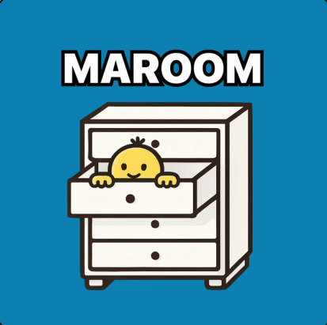

Hello, my name is Daniel Ho Kim!
University of California, Irvine
Donald Bren School of Information and Computer Science B.S. in Informatics
Relevant Coursework: Computer Science, Database Management Systems, Information Systems Design,
Human-Computer Interaction
About Me
I am a dual citizen for Korea and USA.
I have interest in being a Project Manager, Backend Developer, and UI/UX Designer.
Technical Skills
Computer Languages:
Python, Java, C++, SQL
Frameworks:
Spring Boot, Flask, SQLAlchemy
Database:
PostgreSQL
Tools:
Git, GitHub, Railway, RESTful APIs, Postman
Concepts:
OOP, Database Design, Backend Development, API Development
Languages:
Korean (Native), English (Fluent)
My Projects
MAROOM

MAROOM is an AI-powered furniture recommendation
application that helps users find furniture
based on their preferences and budget.
- Identified the challenge of finding personalized furniture online and built an AI-powered recommendation app to match products to user preferences
- Developed RESTful APIs for user authentication and product filtering using Java and Spring Boot
- Integrated SerpAPI to fetch and serve real-time furniture product data based on user taste profiles
- Designed a PostgreSQL database schema to store user preference data and product information
- Currently in the beta testing phase, with the App Store launch planned
View MAROOM on GitHub
Latte Learn
Latte Learn is a web application designed
to support learning and improve the
user experience.
- Built a cafe-themed productivity web app to help users with focus issues by combining Pomodoro timers, lo-fi music
streaming, and a categorized to-do list
- Developed backend routing and REST endpoints using Flask for task and category management
- Designed SQLAlchemy database schema to persist user tasks and session data
- Implemented browser extension-style website blocking and a floating pop-up timer — the most technically complex features of the project
- Built time tracking logic to calculate and visualize time spent per category
View LatteLearn on GitHub